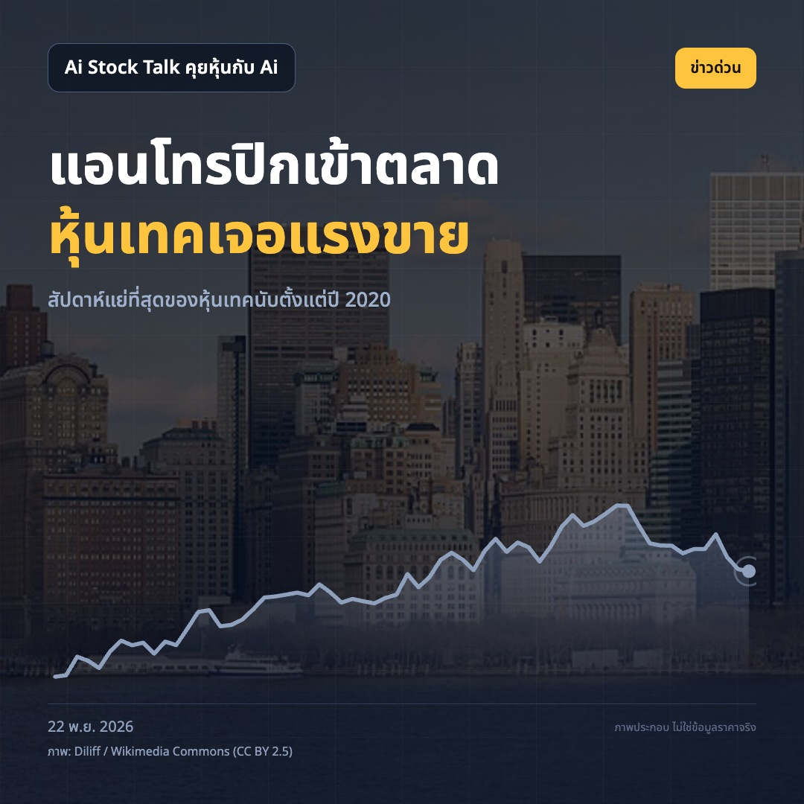
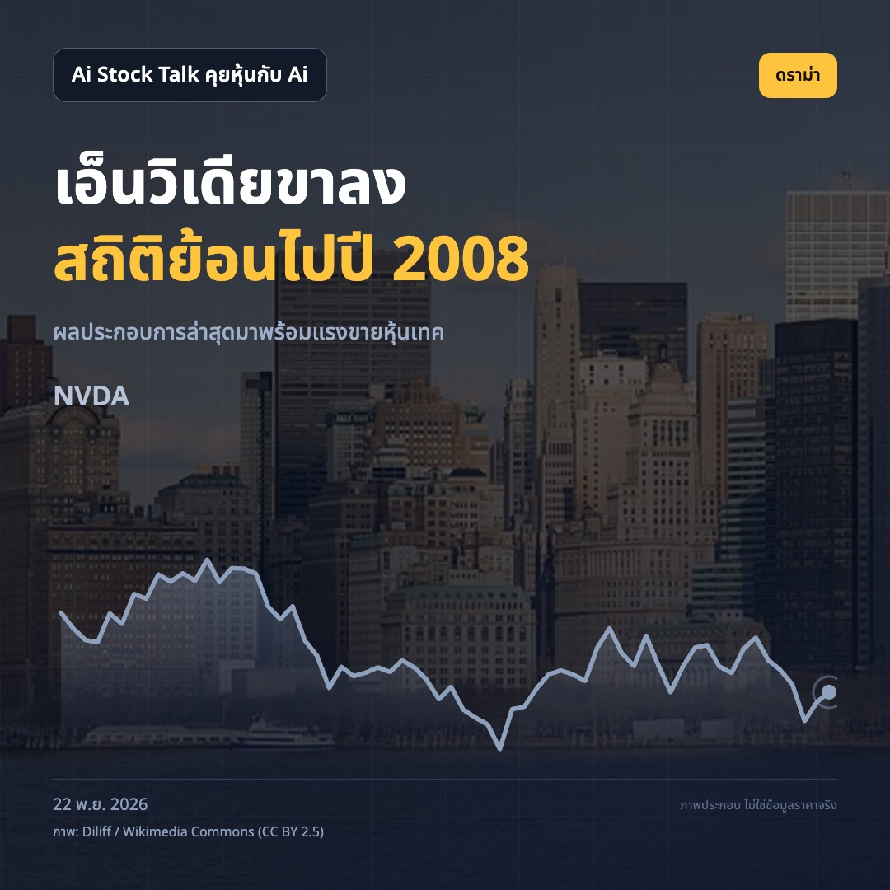
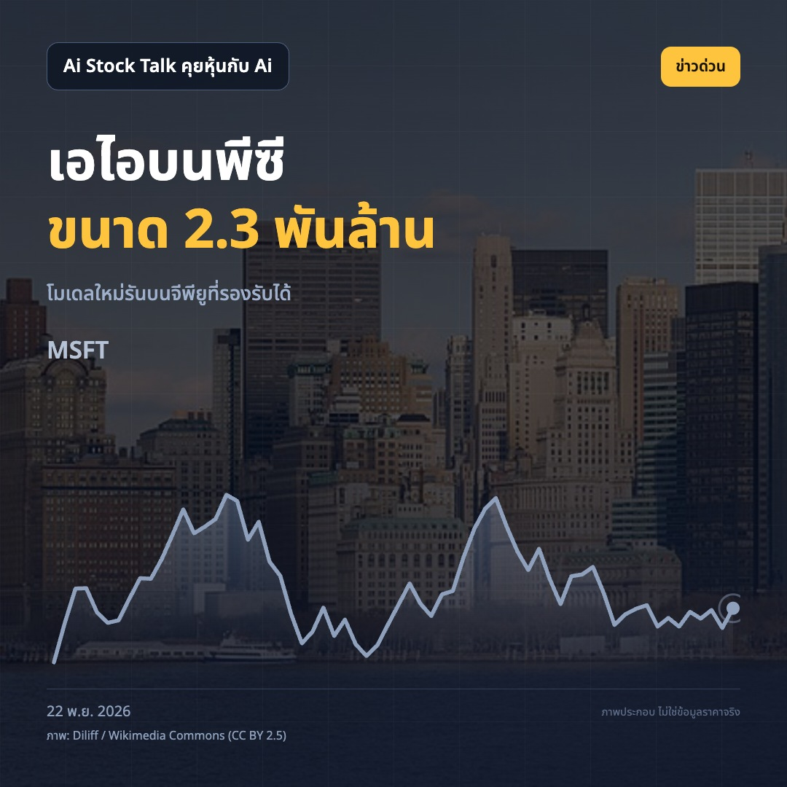
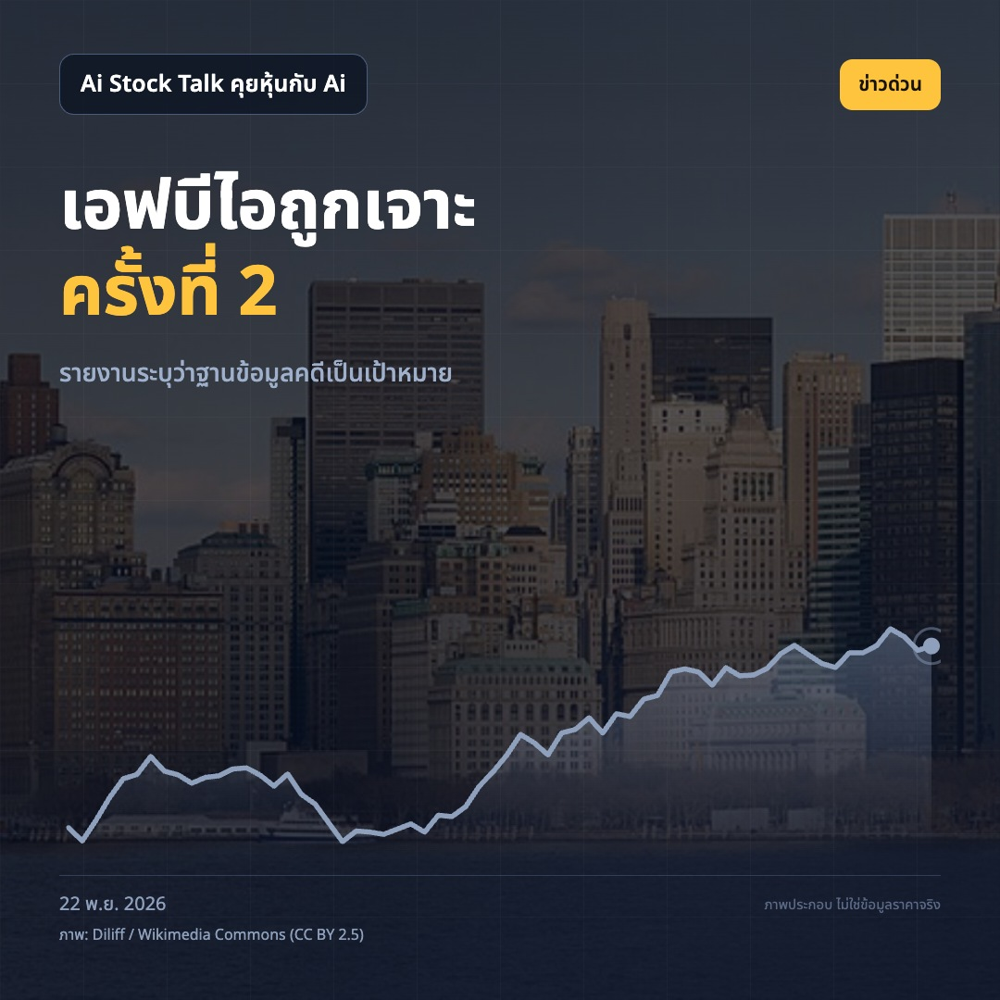
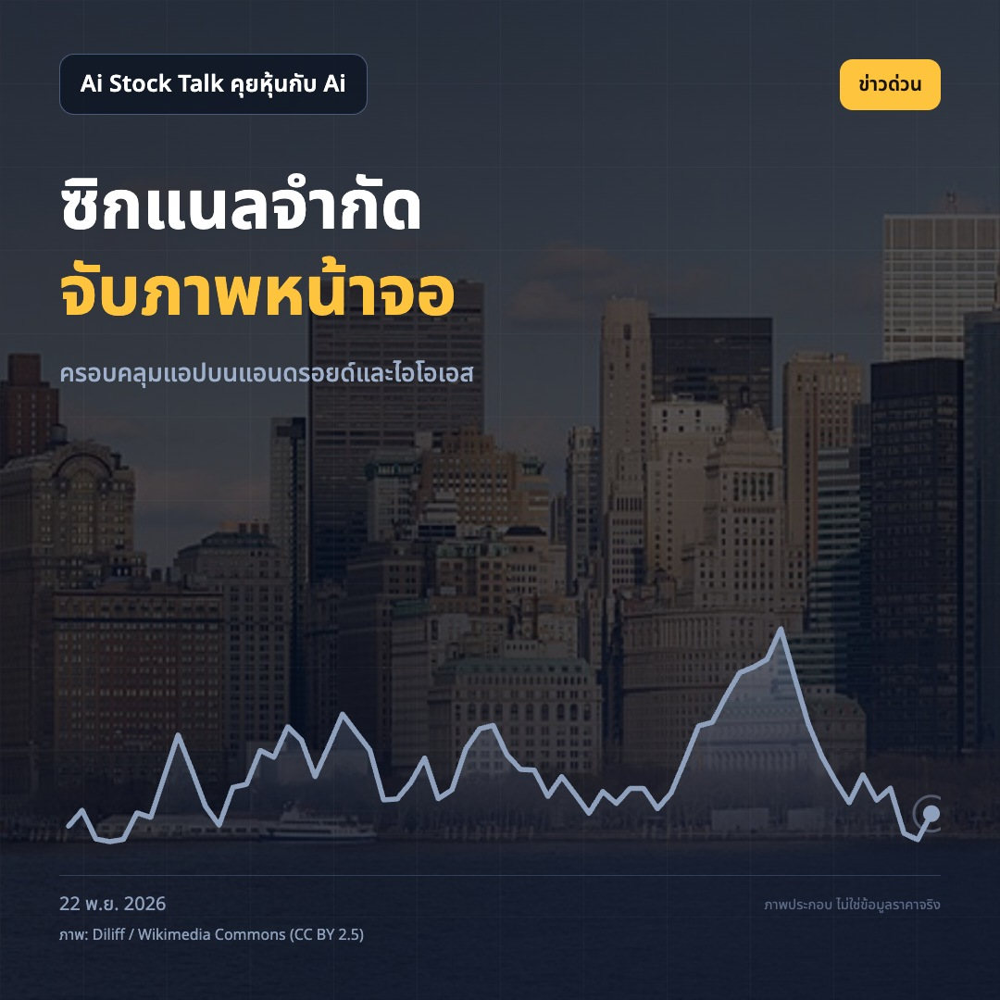
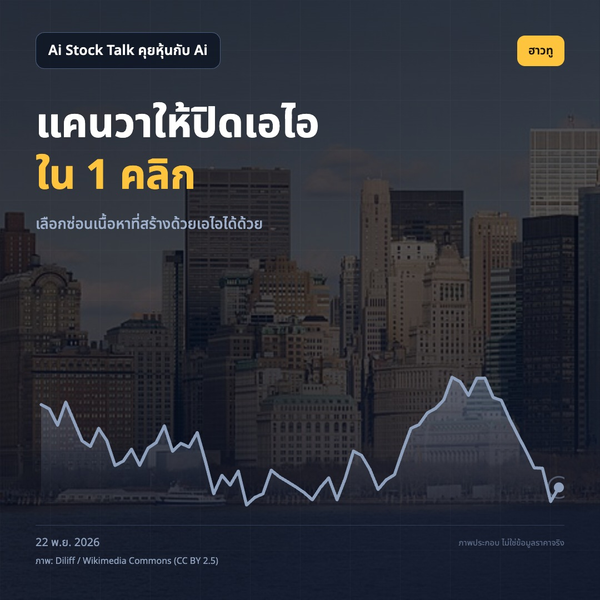

1. แอนโทรปิกเข้าตลาด ท่ามกลางแรงขายหุ้นเทค

แอนโทรปิกเข้าตลาด 1 วันก่อนหุ้นเทคเจอสัปดาห์หนัก บริษัทผู้พัฒนา Claude เข้าซื้อขายในตลาดแนสแด็ก ขณะที่หุ้นเทคเผชิญสัปดาห์ที่แย่ที่สุดนับตั้งแต่ปี 2020 จังหวะนี้ทำให้การเข้าตลาดครั้งใหญ่ของบริษัทเอไอเกิดขึ้นพร้อมกับความกังวลของนักลงทุนต่อหุ้นกลุ่มเดียวกัน อีกประเด็นที่ถูกจับตาคือ แอนโทรปิกจะรักษาการลงทุนด้านความปลอดภัยของเอไออย่างไร หลังต้องตอบต่อผู้ถือหุ้นด้วย ทำไมต้องสน: คนไทยที่ถือหุ้นเทคสหรัฐควรแยกความน่าสนใจของธุรกิจเอไอ ออกจากบรรยากาศซื้อขายหุ้นในช่วงนี้ ถ้าดูหุ้นเอไออยู่ คุณให้น้ำหนักกับการเติบโตหรือความเสี่ยงด้านความปลอดภัยมากกว่า? ที่มา: https://www.cnbc.com/2026/11/21/anthropic-ipo-tech-selloff.html https://www.theverge.com/podcast/1038701/anthropic-ipo-ai-safety-openai-nvidia-structure
แอนโทรปิก #หุ้นเทค #ลงทุนต่างประเทศ
ภาพ: Diliff / Wikimedia Commons (CC BY 2.5)
2. เอ็นวิเดียเจอสถิติขาลงรายสัปดาห์ยาวนานที่สุดนับตั้งแต่ปี 2008

เอ็นวิเดียเจอสถิติขาลงยาวที่สุดนับตั้งแต่ปี 2008 หุ้นเอ็นวิเดียปิดสัปดาห์พร้อมสถิติการลดลงต่อเนื่องรายสัปดาห์ที่ยาวนานที่สุดนับตั้งแต่ปีนั้น เหตุการณ์เกิดขึ้นหลังบริษัทรายงานผลประกอบการล่าสุด และในสัปดาห์เดียวกับที่แอนโทรปิกเข้าตลาดแนสแด็ก ภาพที่นักลงทุนเห็นจึงมีทั้งผลประกอบการของผู้ผลิตชิปเอไอ และแรงขายหุ้นเทคในตลาดพร้อมกัน ทำไมต้องสน: สำหรับพอร์ตที่มีหุ้นเอ็นวิเดีย ข่าวผลประกอบการเพียงเรื่องเดียวอาจอธิบายทิศทางหุ้นในช่วงนี้ได้ไม่ครบ คุณมองการอ่อนตัวของหุ้นเอ็นวิเดียรอบนี้จากผลประกอบการ หรือจากบรรยากาศหุ้นเทคโดยรวมมากกว่า? ที่มา: https://www.cnbc.com/2026/11/21/anthropic-ipo-tech-selloff.html https://techcrunch.com/2026/11/21/a-tale-of-two-nvidias/
เอ็นวิเดีย #หุ้นชิป #หุ้นสหรัฐ
ภาพ: Diliff / Wikimedia Commons (CC BY 2.5)
3. ไมโครซอฟท์เปลี่ยนโมเดลเอไอบนเครื่องเป็น Aion ขนาด 2.3 พันล้านพารามิเตอร์

เอไอบนพีซีเหลือ 2.3 พันล้านพารามิเตอร์ ไมโครซอฟท์เปิดตัว Aion 1.0 Instruct เพื่อแทน Phi Silica ในเครื่องตระกูล Copilot+ PC โดยโมเดลเดิมมีขนาด 3.8 พันล้านพารามิเตอร์ โมเดลใหม่รองรับบริบทยาว 32K จากเดิม 3.5K และรันบนจีพียูที่รองรับได้ ไม่จำกัดเฉพาะเครื่องที่มีเอ็นพียู จีพียูที่ระบุว่ารองรับคือ NVIDIA RTX และ AMD RDNA 4 ขึ้นไป ทำไมต้องสน: การขยายเอไอบนเครื่องไปยังพีซีที่ไม่มีเอ็นพียู ทำให้ผู้ถือหุ้นชิปและพีซีมีอีกเรื่องให้ติดตาม นั่นคือฮาร์ดแวร์แบบใดจะรองรับการใช้งานจริง คุณอยากให้เอไอบนพีซีทำงานในเครื่องมากขึ้นหรือไม่? ที่มา: https://www.blognone.com/node/152235
ไมโครซอฟท์ #เอไอบนเครื่อง #หุ้นชิป
ภาพ: Diliff / Wikimedia Commons (CC BY 2.5)
4. เอฟบีไอถูกเจาะระบบอีกครั้ง ข้อมูลคดีเป็นเป้าหมาย

เอฟบีไอถูกเจาะระบบครั้งที่ 2 ในไม่กี่เดือน รายงานระบุว่าการโจมตีครั้งล่าสุดมุ่งไปที่ฐานข้อมูล National Crime Information Center ของเอฟบีไอ ระบบนี้ใช้แบ่งปันข้อมูลระหว่างหน่วยงานบังคับใช้กฎหมาย ทั้งหมายจับและข้อมูลบุคคลสูญหาย ในวันเดียวกันยังมีรายงานว่ากระทรวงเกษตรสหรัฐถูกเจาะระบบด้วย แต่ข้อมูลที่มีอยู่ยังไม่ระบุผลกระทบทั้งหมดของทั้งสองเหตุการณ์ ทำไมต้องสน: สำหรับคนติดตามหุ้นเทคและความปลอดภัยไซเบอร์ เหตุการณ์นี้แสดงว่าระบบข้อมูลของหน่วยงานใหญ่ยังเผชิญความเสี่ยงที่ต้องติดตาม คุณคิดว่าหน่วยงานควรเปิดเผยรายละเอียดเหตุการณ์ไซเบอร์ต่อสาธารณะเร็วเพียงใด? ที่มา: https://www.theverge.com/tech/1039543/fbi-usda-hacked https://techcrunch.com/2026/11/21/trump-says-reported-fbi-database-hack-is-not-good/
ความปลอดภัยไซเบอร์ #เอฟบีไอ #ข่าวเทค
ภาพ: Diliff / Wikimedia Commons (CC BY 2.5)
5. ซิกแนลจำกัดการจับภาพหน้าจอบนแอนดรอยด์และไอโอเอส

ซิกแนลจำกัดภาพหน้าจอบนมือถือ 2 ระบบ แอปส่งข้อความซิกแนลกำลังจำกัดความสามารถในการจับภาพหน้าจอ ทั้งบนแอนดรอยด์และไอโอเอส ความเคลื่อนไหวนี้เกิดขึ้นระหว่างที่ซิกแนลเผชิญประเด็นการเฝ้าระวังด้วยเอไอ ข้อมูลในรายการข่าวยังไม่ได้อธิบายว่าข้อจำกัดนี้ใช้กับหน้าจอใดบ้าง หรือผู้ใช้ทุกคนได้รับการเปลี่ยนแปลงแล้วหรือยัง ทำไมต้องสน: เมื่อเอไอเข้ามาเกี่ยวข้องกับการเฝ้าระวัง เครื่องมือสื่อสารที่เน้นความเป็นส่วนตัวก็เริ่มเปลี่ยนวิธีใช้งานที่คุ้นเคย ถ้าแอปแชตจำกัดการจับภาพหน้าจอ คุณมองว่าเป็นการปกป้องข้อมูลที่เหมาะสมหรือกระทบการใช้งาน? ที่มา: https://techcrunch.com/2026/11/21/signal-restricts-mobile-screenshots-as-it-confronts-existential-threat-of-ai-surveillance/
ซิกแนล #ความเป็นส่วนตัว #เอไอ
ภาพ: Diliff / Wikimedia Commons (CC BY 2.5)
6. แคนวาให้ปิดฟีเจอร์เอไอทั้งหมดได้ในคลิกเดียว

แคนวาปิดเอไอได้ใน 1 คลิก แคนวาเพิ่มตัวเลือก AI Controls ในหน้าตั้งค่า ให้ผู้ใช้ปิดฟีเจอร์เอไอทั้งหมดได้ด้วยปุ่มเดียว ผู้ใช้เปิดฟีเจอร์กลับมาได้เมื่อต้องการ และยังเลือกไม่ให้เห็นเนื้อหาที่สร้างด้วยเอไอในหน้าไลบรารีได้ การเปลี่ยนแปลงนี้ให้คนที่อยากเริ่มงานเองจากศูนย์เลือกวิธีใช้เครื่องมือได้ชัดขึ้น ทำไมต้องสน: สำหรับคนทำงานด้านเทคและคอนเทนต์ การมีตัวเลือกปิดเอไอทั้งชุดทำให้ตัดสินใจได้เองว่าจะใช้เอไอในงานชิ้นไหน ถ้าเครื่องมือที่คุณใช้มีปุ่มนี้ คุณจะปิดเอไอไว้เป็นค่าเริ่มต้นหรือเปิดไว้? ที่มา: https://www.blognone.com/node/152233
แคนวา #เอไอ #เครื่องมือทำงาน
ภาพ: Diliff / Wikimedia Commons (CC BY 2.5)